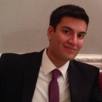

Neel Bhandari
About Me

My passion for technology first sparked when I was in the 7th grade living in the suburbs of Atlanta. My best friend and his older brother were really into PC gaming. They invited me over for a LAN party, which at the time was such a foreign concept to me and to my foreign parents. I came over to his house with my eMachines desktop, an LCD monitor, mouse, and keyboard. I looked around and everyone else had their own custom built PCs. Everyone was more than happy to talk about their machine and from there my interest had sparked.
Fast-forward to college. At this point, I had built many machines for my friends and family and really enjoyed working with my hands. I graduated with my degree in Mechanical Engineering from The Georgia Institute of Technology. I spent the next year as a Design Engineer, using computer-aided design software. After that I joined a medical device company working as a Rotational Engineer. During that time, I got the opportunity to live in three different cities all in different states, Colorado, Massachusetts, and Connecticut.
During my time as a Rotational Engineer, I discovered that my favorite projects were the projects that involved innovation or projects that I would provide innovative solutions to. Then it dawned on me that my true passion is in technology, which has led me back to Atlanta to gain my certification in Full-Stack Web Development at The Georgia Institute of Technology.